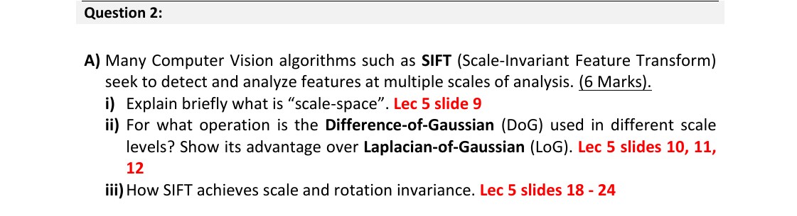

Question 2·A — SIFT: scale-space, DoG vs LoG, scale & rotation invariance
Question (as printed)

i) What is "scale-space"?
"Scale-space" is the same image at many levels of blur. Think of a stack of copies of the picture, each one slightly more blurred than the one below it — you can see big structures at the top and fine detail at the bottom.
Formally: convolve the image with Gaussians of increasing σ. The set of blurred images {L(x, y, σ)} across all σ is the scale-space. It lets the detector look for the same feature whether the camera is close (large detail) or far (small detail).
ii) What is DoG used for? Why prefer it to LoG?
DoG = subtract two adjacent blurred images. The result is a near-perfect cheap copy of the Laplacian-of-Gaussian at that scale — so it's used to find keypoints (blob-like extrema) across scale.
Use: in SIFT, after building the Gaussian pyramid, you compute D(x, y, σ) = L(x, y, kσ) − L(x, y, σ) at each level. A pixel that is a local extremum across its 8 neighbours in the current DoG image and the 9 neighbours in the DoG image above and below ⇒ keypoint candidate.
DoG advantages over LoG:
- Much cheaper — you already had to build the Gaussian pyramid, so DoG is "free" (one subtraction per level) whereas LoG needs an extra second-derivative filter at every scale.
- Numerically stable — DoG ≈ (k − 1) σ² ∇²G, so it directly gives you the scale-normalised Laplacian SIFT actually wants.
iii) How does SIFT achieve scale and rotation invariance?
Scale invariance comes from where you find the keypoint; rotation invariance comes from how you describe it.
- Scale invariance: keypoints are detected as extrema in the DoG scale-space. The σ at which the extremum is found is stored with the keypoint, and all later measurements (descriptor window size, gradient sampling) are scaled by that σ. So the same physical feature is detected at the same relative scale no matter how big or small it appears in the image.
- Rotation invariance: at each keypoint, build a histogram of local gradient orientations (weighted by gradient magnitude and a Gaussian centred on the keypoint). The peak of the histogram is the keypoint's dominant orientation. The 16×16 descriptor patch is then rotated so that this dominant direction points "up" before sampling. The same patch, rotated by any angle, will always be aligned the same way before the descriptor is computed.
In one line: scale invariance = detect at the right σ in DoG scale-space; rotation invariance = rotate the patch to its dominant gradient direction before describing it.
📚 L04 — Scale-space, L04 — DoG & keypoints, L04 — Orientation assignment, L04 — Descriptor.